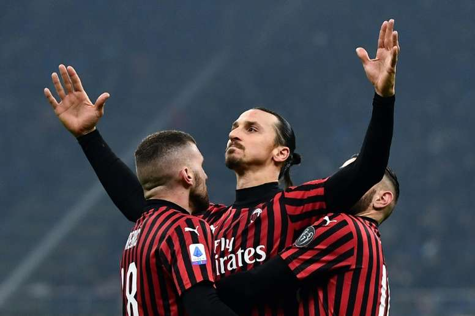

Zlatan Ibrahimovic
The player who innovated the football

Zlatan wearing AC Milan's shirt, celebrating with his teammates after scoaring a goal.
The player who innovated the football
Zlatan wearing AC Milan's shirt, celebrating with his teammates after scoaring a goal.
“First I went left; he did too. Then I went right and he did too. Then I went left again and he went to buy a hot dog.”